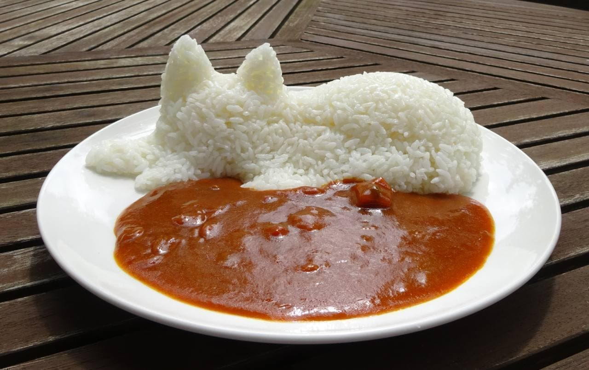

Japanese Curry

Ingredients
Curry Powder
- 4 tsp coriander seeds
- 1 tbsp fenugreek seeds
- 2 1/2 tsp cumin seeds
- 1 1/2 tsp green cardamom pods
- 1/4 tsp fennel seeds
- 1/2 tsp whole cloves
- 1/8 tsp ground star anise
- 1/8 tsp cinnamon stick
- 5 tsp ground turmeric
- 1/2 tsp black peppercorns
- 1/2 tsp white peppercorns
- 1/8 tsp ground allspice
- 1/8 tsp ground nutmeg
Curry Paste
- 3/4 cup butter
- 3/4 cup all-purpose flour
- 3 tbsp Worcestershire sauce
- 3 tbsp tomato paste
- 1/2 cup butter
- 2 large white onions, minced
- 2 lbs boneless, skinless chicken, cut into 1-inch cubes
- 2 tbsp minced garlic
- 1 tsp grated fresh ginger root
- 1 tbsp soy sauce
- 1 tsp salt
- 6 cups chicken broth
- 2 cubes beef bouillon
- 2 carrots, peeled and cut into 1-inch cubes
- 4 potatoes, peeled and cut into 1-inch cubes
- 2 green bell peppers, cut into 1-inch cubes
- 2 Gala apples, peeled and grated
Directions
- Combine coriander seeds, fenugreek seeds, cumin seeds, cardamom pods, and fennel seeds in a large skillet over low heat; toast until lightly golden, 1 to 2 minutes.
- Add cloves, star anise, and cinnamon sticks; toast until fragrant, 1 to 2 minutes. Remove seeds from cardamom pods and return to the skillet, discarding pods.
- Transfer toasted spice mixture to a food processor. Add turmeric, white peppercorns, black peppercorns, allspice, and nutmeg; grind into a fine curry powder.
- Melt 3/4 cup butter in a saucepan over medium heat. Whisk in flour and cook until golden brown, 30 to 45 seconds.
- Stir in 4 tablespoons of the curry powder, Worcestershire sauce, and tomato paste. Remove from heat.
- Melt 1/2 cup butter in a large pot over low heat. Add onions; cook and stir until golden brown, 5 to 10 minutes.
- Increase heat to high; add 2 tablespoons curry powder, chicken, garlic, ginger, soy sauce, and salt. Saute until chicken is browned, about 5 minutes. Add chicken broth and bouillon cubes; bring curry to a boil.
- Stir carrots into the pot; cook until tender, about 5 minutes.
- Add potatoes; cook until tender, about 5 minutes.
- Stir in green bell peppers and apples. Cook until soft, about 10 minutes.
- Stir in curry paste and simmer until sauce thickens and flavors combine, about 5 minutes.